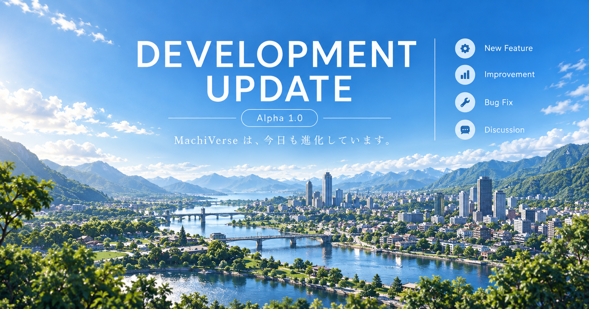

まず最初に INTRODUCTION
「世界シミュレーション」って、
何を作るものだと思いますか？

世界の仕組み CONNECTED WORLD
背景と住民を、
別々のものにしたくない。
01
自然 → 暮らし
地形、水域、植生が居住や産業、交通へ影響する。
02
人 → 社会
生活や選択が家族、仕事、組織などの関係へつながる。
03
経済 → 都市
資源、生産、物流、市場、人の移動が街の姿へ表れる。
04
変化 → 歴史
過去の状態を消さず、次の状態へ影響として残していく。
時間と歴史 TIME & HISTORY
世界の「今」だけを、
保存したくない。
環境→住民→社会→経済→都市→歴史

ダイバー DIVER
私は外側で作る人。
ダイバーは、中へ入る人。
南雲 澪 ≠ ダイバー
南雲は現実側のシステム開発者。ダイバーはMachiVerse世界内へ参加する利用者ロールです。
Alpha 1.0では、General ViewからGatewayを経由してSimulation Coreへ届く最小のダイバー参加操作と、確定したWorldStateがViewへ戻る一連のループが接続されています。
現在の開発状況 ALPHA 1.0
まだ完成していません。
でも、もう構想だけでもありません。
